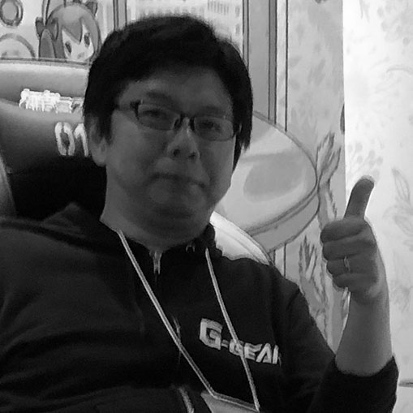

VR game company Yomune.co representative, Digital Hollywood University associate professor Born in 1970, He is Journalist (Video Game / IT) and the Founder and Director Emeritus of International Game Developers Association Japan (IGDA Japan). Currently he manage the VR developers' community which is his primary focus as of now. He published a book called "Shock of VR business Virtual reality bring up gigantic money"
Gametapas
Founder
Juan Gril
Juan has designed and produced successful mass market games for two decades. Currently, Juan is the founder of Gametapas. Previously, he founded Joju Games, a successful casual games studio. Working with both big media companies and game publishers, Joju developed more than 50 games for PC, console, and mobile platforms over 12 years. Juan started his career in the late 90's, when he was one of the original members of Yahoo! Games.
Associate Professor, Tohoku Gakuin University
Nobushige KOBAYASHI (Ph.D.)
Chair of SIG-INDIE at International Game Developers association Japan chapter. Doctoral degree recipient from Tokyo Institute of Technology by the dissertation of "Self-Production Culture as a Key to Growth of Japanese Game Industry", which analyzes problems and solutions of the relations between the independent game development and the game industry of Japan by the social scientific method. A book "Introduction to Digital Games Research" written and edited by him will be published from Minerva Shobo in the summer of 2019. Specialized in media research and cultural sociology.
Circle head, Game Planner, Programmer
Isao Kitayama
Kitayama has established Shindenken in 2002. He has served Comic Market 20 times and has addressed Dorkbot, Sense of Wonder Night, and IGDA conference. He has developed more than 20 game titles including "I will be God of the Forest World.
Business Developer
BadLand Publishing
Ramon Naeval
Ramon began with videogames at 1992, at the age of 12 years old. Then he decided that this is the best medium for express himself. Has been writing for spanish media since 1999 (Onez, Ociojoven, Anaitgames, Eurogamer, Videoshock and Vandal) and has made games since 2003 (Nerlaska, Gameloft, Digital Legends, Abylight, U Play, Blit Software and A Crowd of Monsters). Appart from that he teaches about videogames in several universities, and is part of several videogames developer association.
NPO OcuFes
.
Kenji Takahashi
Kenji joined KOEI in 1998 and had engaged in Dynasty Warriors 1 -4 series. In 2008 he joined Creatures Inc. to be a director of PokePark. 2013 was the year he got OculusRift DK1 as a kickstarter, then he started OcuFes（current Japan VR Fest) as release event of VR softwware. He became independent as a VR professional and incorporated OcuFes in 2014. He is actively in charge of VR promotion in Japan and trailblazing work for VR business development internationally.

ProjectWhite(TSUKUMO)
Operating officer, General Manager of Sales Planning Department, General Manager of Product Planning Department
Kazunori Komagata
I enjoyed entertainment such as games. In charge of planning event exhibition plans such as TGS, Bitsummit, Comiket Magical Mirai. Tsukumo Virtual Shopping, which is broadcast once a month, is also active as a beautiful girl VTuber.